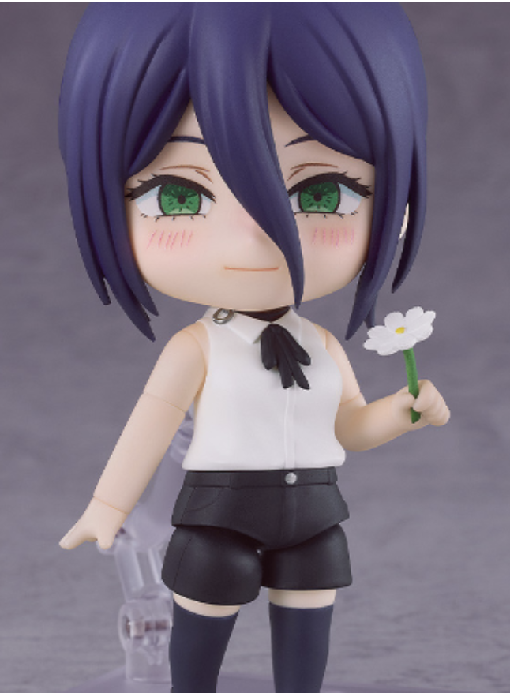

AkibaLens
중간 개발 리포트
피규어 사진 기반 상품 식별 MVP의 설계, 구현 현황, 시행착오, 기술 선택 근거, 그리고 다음 개발 방향을 정리한 중간 산출물
1. Executive Summary
AkibaLens는 사용자가 아키하바라, 돈키호테, 중고 피규어샵 등에서 발견한 피규어를 사진만으로 식별하고, 일본 쇼핑몰 검색 및 가격 비교로 이어갈 수 있도록 돕는 AI 쇼핑 보조 MVP이다.
프로젝트 셋업, 업로드 UI, Vision API, 상품 후보 검색 1차 구현.
OpenAI Vision으로 식별 단서를 만들고 OpenAI Web Search로 후보를 검색.
자체 모델 학습보다 실제 사용 가능한 end-to-end 흐름 검증에 집중.
2. Product Context
사용자 문제
- 피규어 이름, 캐릭터명, 작품명, 제조사를 모른다.
- 일본어 상품명 검색이 어렵다.
- 가격 비교 이전에 검색어 생성부터 막힌다.
- 특히 박스 없이 진열된 피규어에서 문제가 커진다.
MVP 목표
- 피규어 이미지 업로드.
- AI Vision 기반 캐릭터/작품/시각 단서 추출.
- 상품 후보 검색 및 마켓플레이스 링크 생성.
- 사용자가 구매 판단을 시작할 수 있는 정보 제공.
3. Current MVP Snapshot
현재 UI는 업로드 이미지와 분석 결과를 좌우로 배치한다. 초기에는 “정답 표시” UI였지만, 현재는 실제 문제에 맞춰 “Retrieval Clues” 중심으로 개편되었다.
Image Upload

샘플 이미지: 박스 없는 넨도로이드 피규어 사진
Retrieval Clues
Figure 1. 현재 구현 방향을 반영한 UI 스냅샷. 제조사와 라인업은 보이지 않으면 단정하지 않고, 검색 단서 중심으로 결과를 구성한다.
4. Implementation Status
| Phase | Status | 구현 내용 | 검증 |
|---|---|---|---|
| Project Setup | Done | Next.js, TypeScript, Tailwind CSS, FastAPI 기본 구조 생성. | Frontend/Backend 로컬 실행 확인. |
| Image Upload UI | Done | 이미지 업로드, 미리보기, 파일 형식/크기 검증, 로딩/에러 상태. | Next.js build 및 브라우저 화면 확인. |
| Vision API | Done | OpenAI Responses API 이미지 입력, 구조화된 JSON 응답, 저정보 이미지 guard. | 실제 OpenAI 요청 도달 및 quota 문제 해결 후 분석 성공. |
| Retrieval Prep | Done | 검색 단서 중심 스키마: subject candidates, visual features, search queries. | UI를 Retrieval Clues 중심으로 개편. |
| Marketplace Search | In Progress | AmiAmi, Mandarake, Suruga-ya 검색 링크 및 OpenAI Web Search 후보 검색. | Reze Nendoroid 검색 단서로 Good Smile 공식 페이지 검색 성공. |
5. Current Technical Architecture
Next.js UI에서 JPG/PNG/WEBP 업로드 및 미리보기.
/api/analyze multipart endpoint로 이미지 전달.
캐릭터, 작품, 시각 특징, 검색 쿼리 구조화.
OpenAI Web Search로 상품 후보 페이지 검색.
검색 단서, 후보 링크, 마켓플레이스 검색 링크 표시.
주요 코드 위치
| 영역 | 파일 | 역할 |
|---|---|---|
| Frontend | frontend/src/app/upload-experience.tsx |
업로드 UI, 결과 표시, 검색 후보 UI. |
| API | backend/app/api/analyze.py |
이미지 검증, Vision 호출, retrieval 결과 조합. |
| Vision | backend/app/services/figure_identifier.py |
OpenAI Vision prompt, structured output, low-information guard. |
| Retrieval | backend/app/services/product_retrieval.py |
OpenAI Web Search, Google/DuckDuckGo fallback, 후보 정리. |
| Schema | backend/app/schemas/analyze.py |
분석 결과와 검색 후보 응답 모델. |
6. Key Experiments and Learnings
Figure 2. 박스 없이 촬영된 Reze Nendoroid 샘플.
관찰 결과
- Vision-only는 캐릭터/작품을 맞출 때도 있지만, 이미지에 따라 틀릴 수 있었다.
- 제조사/라인업은 실물 사진만으로 보이지 않는 경우가 많아 무리하게 단정하면 품질이 떨어졌다.
- 웹 ChatGPT가 더 잘 맞춘 사례는 단순 모델 차이보다 검색/추론/후보 검증 흐름 차이가 컸다.
- OpenAI Web Search는 정확한 텍스트 단서가 주어지면 Good Smile 공식 상품 페이지까지 잘 찾아왔다.
- 다만 Web Search는 reverse image search가 아니므로 Vision 후보가 틀리면 검색도 함께 흔들릴 수 있다.
7. Difficulties, Root Causes, and Resolutions
| 문제 | 원인 | 해결/대응 | 남은 리스크 |
|---|---|---|---|
| OpenAI API quota 오류 | Free/Prototype 플랜과 실제 API credit 개념이 혼동됨. | API billing/credit 충전 후 실제 Vision 요청 도달 확인. | 검색 도구 사용 시 추가 비용 관리 필요. |
| 제조사/라인업 누락 | 박스 없는 실물 사진에서는 해당 정보가 직접 보이지 않음. | 억지 확정보다 unknown_fields, visual_features, 검색 쿼리 중심으로 스키마 개편. |
정확한 상품명 확정에는 retrieval 및 reranking 필요. |
| Vision-only 오식별 | API의 이미지 인식만으로는 세부 상품 후보 식별이 불안정함. | Vision 결과를 “정답”이 아니라 “검색 가설”로 취급하도록 프롬프트와 UI 수정. | 어려운 이미지에서는 여전히 후보군이 흔들릴 수 있음. |
| DuckDuckGo HTML 검색 불안정 | HTML scraping 방식은 challenge/차단/파싱 실패에 취약. | 무료 실험용 fallback으로만 유지. | 운영용 검색에는 부적합. |
| Google Custom Search 403 | 공식 문서상 Custom Search JSON API가 신규 고객에게 닫힘. 콘솔에서 사용 설정됨으로 보여도 API key 호출이 막힘. | Google provider를 보류하고 OpenAI Web Search로 전환. | Google CSE 기반 설계는 신규 프로젝트에서 재현성이 낮음. |
| 응답 속도 증가 | Vision 분석과 Web Search를 여러 번 직렬 실행. | 기본값을 OPENAI_IDENTIFICATION_WEB_SEARCH=false, SEARCH_RESULT_LIMIT=3로 조정. |
추후 식별 결과 먼저 보여주고 검색은 비동기로 분리 필요. |
8. Alternatives Considered
| 대안 | 장점 | 단점 | 결정 |
|---|---|---|---|
| Vision-only | 구현 단순, 비용과 지연시간 낮음. | 정확한 상품명/라인업 식별 한계. | 기본 식별 단계로 유지. |
| DuckDuckGo/Bing HTML | 무료 실험 가능. | 불안정, 차단 가능, 파싱 유지보수 부담. | fallback/실험용으로만 유지. |
| Google Custom Search API | 구조화된 검색 JSON, 도메인 제한 가능. | 신규 고객 접근 제한으로 403 발생. | 보류. |
| Brave Search API | 검색 API로 안정적이고 구현 명확. | 별도 API 키와 요금/한도 관리 필요. | 대안 후보로 유지. |
| SerpAPI | Google 검색 결과에 가까운 결과 제공. | 무료 한도 작고 유료 전환 빠를 수 있음. | 나중에 정확도 비교 후보. |
| OpenAI Web Search | 기존 OpenAI 키로 Vision + Search 흐름 통합, 도메인 필터 가능, citations/source 활용 가능. | 응답 지연과 tool call 비용 발생. | MVP 기본 retrieval 방식으로 선택. |
| CLIP/SigLIP/Fine-tuning | 장기적으로 도메인 특화 정확도 향상 가능. | 데이터셋 구축, 학습, 평가 비용이 큼. | MVP 이후 검토. |
9. Timeline
README, MVP 계획, PDF 개발 계획, progress tracker 작성.
Next.js/FastAPI scaffold, 업로드 UI, 분석 endpoint 구현.
OpenAI Vision 연결, 구조화된 분석 결과 및 Retrieval Clues UI.
검색 API 실험, Google CSE 이슈 확인, OpenAI Web Search 전환.
10. Current Configuration
| 설정 | 현재값 | 의미 |
|---|---|---|
OPENAI_MODEL |
gpt-5.2 사용 가능 |
이미지 분석 모델. 실제 값은 로컬 .env에서 관리. |
OPENAI_IMAGE_DETAIL |
high |
피규어 세부 특징 인식 개선을 위해 high detail 사용. |
SEARCH_PROVIDER |
openai |
상품 후보 검색 기본 provider를 OpenAI Web Search로 설정. |
OPENAI_IDENTIFICATION_WEB_SEARCH |
false |
속도 개선을 위해 식별 단계에서는 Web Search를 끄고, retrieval 단계에서만 사용. |
SEARCH_RESULT_LIMIT |
3 |
검색 후보 수를 줄여 응답 시간과 비용을 제어. |
11. Remaining Problems
정확도
Web Search는 reverse image search가 아니므로 Vision이 틀린 단서를 만들면 검색 결과도 틀린 방향으로 갈 수 있다. 다음 단계에서는 subject candidates를 더 다양하게 만들고, 검색 결과를 별도 reranker로 재평가해야 한다.
속도
Vision + Web Search를 한 요청에서 모두 기다리면 UX가 느리게 느껴진다. 식별 결과를 먼저 보여주고, 상품 후보 검색은 비동기 job 또는 staged UI로 분리하는 것이 필요하다.
가격 비교
현재는 검색 링크와 후보 페이지 중심이다. 실제 가격 비교 테이블을 만들려면 쇼핑몰별 HTML 구조, robots/정책, 파싱 안정성을 별도로 검토해야 한다.
평가 데이터
Reze, Power 등 개별 샘플 테스트는 했지만 체계적인 benchmark는 아직 없다. 10-30장 규모의 테스트셋과 success criteria를 만들어야 정확도 개선을 숫자로 관리할 수 있다.
12. Next Action Plan
| 우선순위 | 작업 | 목표 | 예상 효과 |
|---|---|---|---|
| 1 | Staged UI | 식별 결과를 먼저 표시하고 상품 검색은 별도 로딩 처리. | 사용자가 느끼는 대기시간 감소. |
| 2 | Candidate Reranker | Vision 후보와 Web Search 후보를 비교해 top 1-3 랭킹. | 상품명/라인업 정확도 개선. |
| 3 | Evaluation Set | 피규어 이미지 10-30장, 정답 label, 성공 기준 정의. | 개선 여부를 감이 아니라 수치로 판단. |
| 4 | Price Comparison Mock | 가격 비교 UI를 먼저 mock 데이터로 구현. | MVP 사용자 흐름 완성도 향상. |
| 5 | Marketplace Policy Check | AmiAmi/Mandarake/Suruga-ya 파싱 가능성 및 정책 확인. | 운영 가능한 가격 수집 방식 결정. |
13. Portfolio Value
AkibaLens는 단순 CRUD 앱이 아니라, 실제 사용자 문제에서 출발해 AI 모델의 불확실성, 검색 기반 보강, UX 대기시간, 외부 API 제약까지 다루는 프로젝트이다.
Problem Discovery
개인 경험 기반의 구체적인 pain point와 명확한 target user.
AI Product Thinking
Vision output을 정답이 아니라 retrieval clue로 다루는 제품 설계.
Engineering Judgment
자체 모델 학습 대신 API 기반 MVP로 빠른 검증을 선택.
14. References
- OpenAI Web Search Tool: https://platform.openai.com/docs/guides/tools-web-search
- OpenAI Tools Guide: https://platform.openai.com/docs/guides/tools
- OpenAI API Pricing: https://openai.com/api/pricing/
- Google Custom Search JSON API Overview: https://developers.google.com/custom-search/v1/overview